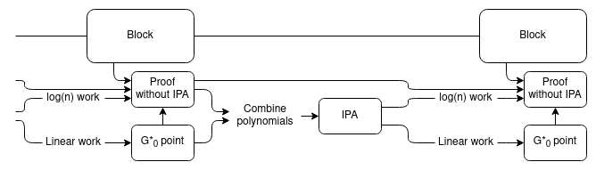
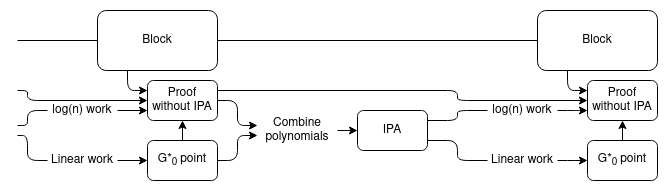

Artist's block: living trapped within one's frustrations
2025 Aug 18
See all posts
Artist's block: living trapped within one's frsutrations
Special thanks to my husband who had this website template prepared, so I could jump straight into creating.
Hello there. I want to be honest here and say that I didn't know what to write for my first post. So, after a few days pondering on the question, I wanted to just speak from the heart and tackle something less technical: the frustrations that limit an artist's growth.
I am talking about trying to be brave against AI; trying to escape social media's addictive toxicity; trying to rid yourself from the weight of living and make it so it helps you float instead; fighting to take back control over your ability to make your own decisions... because every second counts, and directing your time and effort into what really matters (your family, your friends and yourself) will be the most rewarding feeling you can come across in general. While the body feeds on food and water, the mind does so from thoughts, experiences and feelings. And this is important if any of us want to replace that lack of motivation with the solid driving force to create. Something beyond passion and inspiration.
Commitment.
Personal experiences
In a society with fast evolving technologies, this world slowly has been turning more and more artificial. The food, extremelly processed. The sights washed by tall waves of grey in every city's hearts. The sounds always with that never-ending murmur of an engine nearby. And now, social interaction replaced by likes and comments on Instagram or the rebranded Twitter, X.
Don't get me wrong, I don't hate social media. In fact, these are useful tools for promoting one's self, for contacting friends from afar, or sharing knowledge and humour. But it is sad to see how people use these platforms and tools nowadays. Instead of bringing us together, I feel like we are more distant than ever.
Setting that aside, when I turned 18 and had to choose a bachelor's degree, I went to study... computer science. Yes. It was no where near arts in fact! At that time I was very indecisive and extremelly biased by the idea that to live a stable life you needed a well-paid job. To be honest, I have always been a curious monkey and I find every piece of engineering beautiful and worth investigating. Having said that, it seemed natural to choose this degree. This is the part where one says, "This was the biggest mistake of my life!" as if it were some YouTube clickbait title, but no. It wasn't a mistake. I grew up with this experience, met really good friends and found the love of my life. Finally I was able to align my thoughts with my core values, and, as silly as it may sound, I was able to understand that a stable life isn't necessarily a happy life. Of course, one can find happiness in a stable life, just how my parents did. But the road I was going down was far from merry.
I am not going to go into detail as to why those years in uni were depressing. I believe it is unnecessary, but what I want to share now is that it is never too late to take action. This year, I quit computer science, after having tried completing the course over the past 6 years, I am getting married and I am planning on continuing this art journey: whether going to an art school or preparing my own portfolio, I do not know yet. But of course, one has to make sacrifices along the way, since life is like playing Dark Souls on the most difficult of settings. For instance, these days I had applied to an art school and needed to complete an exam to enter, but my current intership related to my computer science degree is offering me a job placement now. I am quite forced to accept this and leave aside the idea of studying at that art school for now because my husband and I need that extra money.
Be that as it may, it is never too late to create or do what you love most. You just have to take action. One step at a time as funny as it may be. This is why I started this blog. To hold myself and others accountable, and help us all strive for that happy life.
Like I mentioned earlier, social media as well as AI can be very useful tools, but the way they are used these days is harmful.
First, let's talk about AI. We are all aware how this tool is able of copying and reproducing styles from different illustrators and musicians; however, this technology is already replacing translators' and programmers' tasks too. If you've watched The Incredibles, you'll remember the scene where the villain Syndrome says, "...when everyone's super... No one will be." Of course, this isn't the meaning Pixar intended to give, but it's an easy and short way to say that AI is to become something normal, deeply integrated in our society, like Google is today. And what will make artists 'super' is our ability to craft evoking scenes with our own two hands. Before, an artist sold paintings, movies, comics... Today, they sell authenticity, care and passion for the love of art.
This technique can easily be generalized to merge \(m > 2\) signatures.
From merging IPAs to merging IPA-based SNARKs: Halo
Now, we get into the core mechanic of the Halo protocol being integrated in Zcash, which uses this proof combining technique to create a recursive proof system. The setup is simple: suppose you have a chain, where each block has an associated IPA-based SNARK (see here for how generic SNARKs from polynomial commitments work) proving its correctness. You want to create a new block, building on top of the previous tip of the chain. The new block should have its own IPA-based SNARK proving the correctness of the block. In fact, this proof should cover both the correctness of the new block and the correctness of the previous block's proof of the correctness of the entire chain before it.
IPA-based proofs by themselves cannot do this, because a proof of a statement takes longer to verify than checking the statement itself, so a proof of a proof will take even longer to verify than both proofs separately. But proof merging can do it!

Essentially, we use the usual "recursive SNARK" technique to verify the proofs, except the "proof of a proof" part is only proving the logarithmic part of the work. We add an extra chain of aggregate proofs, using a trick similar to the proof merging scheme above, to handle the linear part of the work. To verify the whole chain, the verifier need only verify one linear-time proof at the very tip of the chain.
The precise details are somewhat different from the exact proof-combining trick in the previous section for efficiency reasons. Instead of using the proof-combining trick to combine multiple proofs, we use it on a single proof, just to re-randomize the point that the polynomial committed to by \(G^*_0\) needs to be evaluated at. We then use the same newly chosen evaluation point to evaluate the polynomials in the proof of the block's correctness, which allows us to prove the polynomial evaluations together in a single IPA.
Expressed in math:
- Let \(P(z) = a\) be the previous statement that needs to be proven
- The prover generates \(G^*_0\)
- The prover proves the correctness of the new block plus the logarithmic work in the previous statements by generating a PLONK proof: \(Q_L * A + Q_R * B + Q_O * C + Q_M * A * B + Q_C = Z * H\)
- The prover chooses a random point \(t\), and proves the evaluation of a linear combination of \(\{G^*_0,\ Q_L,\ A,\ Q_R,\ B,\ Q_O,\ C,\ Q_M,\ Q_C,\ Z,\ H\}\) at \(t\). We can then check the above equation, replacing each polynomial with its now-verified evaluation at \(t\), to verify the PLONK proof.
Incremental verification, more generally
The size of each "step" does not need to be a full block verification; it could be something as small as a single step of a virtual machine. The smaller the steps the better: it ensures that the linear work that the verifier ultimately has to do at the end is less. The only lower bound is that each step has to be big enough to contain a SNARK verifying the \(log(n)\) portion of the work of a step.
But regardless of the fine details, this mechanism allows us to make succinct and easy-to-verify SNARKs, including easy support for recursive proofs that allow you to extend proofs in real time as the computation extends and even have different provers to do different parts of the proving work, all without pairings or a trusted setup! The main downside is some extra technical complexity, compared with a "simple" polynomial-based proof using eg. KZG-based commitments.
| FRI |
Hashes only (quantum safe!) |
Large (10-200 kB) |
Medium (poly-logarithmic) |
| Inner product arguments (IPAs) |
Basic elliptic curves |
Medium (1-3 kB) |
Very high (linear) |
| KZG commitments |
Elliptic curves + pairings + trusted setup |
Short (~500 bytes) |
Low (constant) |
| IPA + Halo-style aggregation |
Basic elliptic curves |
Medium (1-3 kB) |
Medium (constant but higher than KZG) |
Not just polynomials! Merging R1CS proofs
A common alternative to building SNARKs out of polynomial games is building SNARKs out of matrix-vector multiplication games. Polynomials and vectors+matrices are both natural bases for SNARK protocols because they are mathematical abstractions that can store and compute over large amounts of data at the same time, and that admit commitment schemes that allow verifiers to check equations quickly.
In R1CS (see a more detailed description here), an instance of the game consists of three matrices \(A\), \(B\), \(C\), and a solution is a vector \(Z\) such that \((A \cdot Z) \circ (B \cdot Z) = C \cdot Z\) (the problem is often in practice restricted further by requiring the prover to make part of \(Z\) public and requiring the last entry of \(Z\) to be 1).
An R1CS instance with a single constraint (so \(A\), \(B\) and \(C\) have width 1), with a satisfying \(Z\) vector, though notice that here the \(Z\) appears on the left and has 1 in the top position instead of the bottom.
Just like with polynomial-based SNARKs, this R1CS game can be turned into a proof scheme by creating commitments to \(A\), \(B\) and \(C\), requiring the prover to provide a commitment to (the private portion of) \(Z\), and using fancy proving tricks to prove the equation \((A \cdot Z) \circ (B \cdot Z) = C \cdot Z\), where \(\circ\) is item-by-item multiplication, without fully revealing any of these objects. And just like with IPAs, this R1CS game has a proof merging scheme!
Ioanna Tzialla et al describe such a scheme in a recent paper (see page 8-9 for their description). They first modify the game by introducing an expanded equation:
\[ (A \cdot Z) \circ (B \cdot Z) - u * (C \cdot Z) = E\]
For a "base" instance, \(u = 1\) and \(E = 0\), so we get back the original R1CS equation. The extra slack variables are added to make aggregation possible; aggregated instances will have other values of \(u\) and \(E\). Now, suppose that you have two solutions to the same instance, though with different \(u\) and \(E\) variables:
\[(A \cdot Z_1) \circ (B \cdot Z_1) - u_1 * (C \cdot Z_1) = E_1\]
\[(A \cdot Z_2) \circ (B \cdot Z_2) - u_2 * (C \cdot Z_2) = E_2\]
The trick involves taking a random linear combination \(Z_3 = Z_1 + r Z_2\), and making the equation work with this new value. First, let's evaluate the left side:
\[ (A \cdot (Z_1 + rZ_2)) \circ (B \cdot (Z_1 + rZ_2)) - (u_1 + ru_2)*(C \cdot (Z_1 + rZ_2)) \]
This expands into the following (grouping the \(1\), \(r\) and \(r^2\) terms together):
\[(A \cdot Z_1) \circ (B \cdot Z_1) - u_1 * (C \cdot Z_1)\]
\[r((A \cdot Z_1) \circ BZ_2 + (A \cdot Z_2) \circ BZ_1 - u_1 * (C \cdot Z_2) + u_2 * (C \cdot Z_1))\]
\[r^2((A \cdot Z_2) \circ (B \cdot Z_2) - u_2 * (C \cdot Z_2))\]
The first term is just \(E_1\); the third term is \(r^2 * E_2\). The middle term is very similar to the cross-term (the yellow + green areas) near the very start of this post. The prover simply provides the middle term (without the \(r\) factor), and just like in the IPA proof, the randomization forces the prover to be honest.
Hence, it's possible to make merging schemes for R1CS-based protocols too. Interestingly enough, we don't even technically need to have a "succinct" protocol for proving the \[ (A \cdot Z) \circ (B \cdot Z) = u * (C \cdot Z) + E\] relation at the end; instead, the prover could just prove by opening all the commitments directly! This would still be "succinct" because the verifier would only need to verify one proof that actually represents an arbitrarily large number of statements. However, in practice having a succinct protocol for this last step is better because it keeps the proofs smaller, and Tzialla et al's paper provides such a protocol too (see page 10).
Recap
- We don't know of a way to make a commitment to a size-\(n\) polynomial where evaluations of the polynomial can be verified in \(< O(n)\) time directly. The best that we can do is make a \(log(n)\) sized proof, where all of the work to verify it is logarithmic except for one final \(O(n)\)-time piece.
- But what we can do is merge multiple proofs together. Given \(m\) proofs of evaluations of size-\(n\) polynomials, you can make a proof that covers all of these evaluations, that takes logarithmic work plus a single size-\(n\) polynomial proof to verify.
- With some clever trickery, separating out the logarithmic parts from the linear parts of proof verification, we can leverage this to make recursive SNARKs.
- These recursive SNARKs are actually more efficient than doing recursive SNARKs "directly"! In fact, even in contexts where direct recursive SNARKs are possible (eg. proofs with KZG commitments), Halo-style techniques are typically used instead because they are more efficient.
- It's not just about polynomials; other games used in SNARKs like R1CS can also be aggregated in similar clever ways.
- No pairings or trusted setups required!
The march toward faster and more efficient and safer ZK-SNARKs just keeps going...
Artist's block: living trapped within one's frustrations
2025 Aug 18 See all postsContents
Special thanks to my husband who had this website template prepared, so I could jump straight into creating.
Hello there. I want to be honest here and say that I didn't know what to write for my first post. So, after a few days pondering on the question, I wanted to just speak from the heart and tackle something less technical: the frustrations that limit an artist's growth.
I am talking about trying to be brave against AI; trying to escape social media's addictive toxicity; trying to rid yourself from the weight of living and make it so it helps you float instead; fighting to take back control over your ability to make your own decisions... because every second counts, and directing your time and effort into what really matters (your family, your friends and yourself) will be the most rewarding feeling you can come across in general. While the body feeds on food and water, the mind does so from thoughts, experiences and feelings. And this is important if any of us want to replace that lack of motivation with the solid driving force to create. Something beyond passion and inspiration.
Commitment.
Personal experiences
In a society with fast evolving technologies, this world slowly has been turning more and more artificial. The food, extremelly processed. The sights washed by tall waves of grey in every city's hearts. The sounds always with that never-ending murmur of an engine nearby. And now, social interaction replaced by likes and comments on Instagram or the rebranded Twitter, X.
Don't get me wrong, I don't hate social media. In fact, these are useful tools for promoting one's self, for contacting friends from afar, or sharing knowledge and humour. But it is sad to see how people use these platforms and tools nowadays. Instead of bringing us together, I feel like we are more distant than ever.
Setting that aside, when I turned 18 and had to choose a bachelor's degree, I went to study... computer science. Yes. It was no where near arts in fact! At that time I was very indecisive and extremelly biased by the idea that to live a stable life you needed a well-paid job. To be honest, I have always been a curious monkey and I find every piece of engineering beautiful and worth investigating. Having said that, it seemed natural to choose this degree. This is the part where one says, "This was the biggest mistake of my life!" as if it were some YouTube clickbait title, but no. It wasn't a mistake. I grew up with this experience, met really good friends and found the love of my life. Finally I was able to align my thoughts with my core values, and, as silly as it may sound, I was able to understand that a stable life isn't necessarily a happy life. Of course, one can find happiness in a stable life, just how my parents did. But the road I was going down was far from merry.
I am not going to go into detail as to why those years in uni were depressing. I believe it is unnecessary, but what I want to share now is that it is never too late to take action. This year, I quit computer science, after having tried completing the course over the past 6 years, I am getting married and I am planning on continuing this art journey: whether going to an art school or preparing my own portfolio, I do not know yet. But of course, one has to make sacrifices along the way, since life is like playing Dark Souls on the most difficult of settings. For instance, these days I had applied to an art school and needed to complete an exam to enter, but my current intership related to my computer science degree is offering me a job placement now. I am quite forced to accept this and leave aside the idea of studying at that art school for now because my husband and I need that extra money.
Be that as it may, it is never too late to create or do what you love most. You just have to take action. One step at a time as funny as it may be. This is why I started this blog. To hold myself and others accountable, and help us all strive for that happy life.
AI and social media
Like I mentioned earlier, social media as well as AI can be very useful tools, but the way they are used these days is harmful.
First, let's talk about AI. We are all aware how this tool is able of copying and reproducing styles from different illustrators and musicians; however, this technology is already replacing translators' and programmers' tasks too. If you've watched The Incredibles, you'll remember the scene where the villain Syndrome says, "...when everyone's super... No one will be." Of course, this isn't the meaning Pixar intended to give, but it's an easy and short way to say that AI is to become something normal, deeply integrated in our society, like Google is today. And what will make artists 'super' is our ability to craft evoking scenes with our own two hands. Before, an artist sold paintings, movies, comics... Today, they sell authenticity, care and passion for the love of art.
This technique can easily be generalized to merge \(m > 2\) signatures.
From merging IPAs to merging IPA-based SNARKs: Halo
Now, we get into the core mechanic of the Halo protocol being integrated in Zcash, which uses this proof combining technique to create a recursive proof system. The setup is simple: suppose you have a chain, where each block has an associated IPA-based SNARK (see here for how generic SNARKs from polynomial commitments work) proving its correctness. You want to create a new block, building on top of the previous tip of the chain. The new block should have its own IPA-based SNARK proving the correctness of the block. In fact, this proof should cover both the correctness of the new block and the correctness of the previous block's proof of the correctness of the entire chain before it.
IPA-based proofs by themselves cannot do this, because a proof of a statement takes longer to verify than checking the statement itself, so a proof of a proof will take even longer to verify than both proofs separately. But proof merging can do it!

Essentially, we use the usual "recursive SNARK" technique to verify the proofs, except the "proof of a proof" part is only proving the logarithmic part of the work. We add an extra chain of aggregate proofs, using a trick similar to the proof merging scheme above, to handle the linear part of the work. To verify the whole chain, the verifier need only verify one linear-time proof at the very tip of the chain.
The precise details are somewhat different from the exact proof-combining trick in the previous section for efficiency reasons. Instead of using the proof-combining trick to combine multiple proofs, we use it on a single proof, just to re-randomize the point that the polynomial committed to by \(G^*_0\) needs to be evaluated at. We then use the same newly chosen evaluation point to evaluate the polynomials in the proof of the block's correctness, which allows us to prove the polynomial evaluations together in a single IPA.
Expressed in math:
Incremental verification, more generally
The size of each "step" does not need to be a full block verification; it could be something as small as a single step of a virtual machine. The smaller the steps the better: it ensures that the linear work that the verifier ultimately has to do at the end is less. The only lower bound is that each step has to be big enough to contain a SNARK verifying the \(log(n)\) portion of the work of a step.
But regardless of the fine details, this mechanism allows us to make succinct and easy-to-verify SNARKs, including easy support for recursive proofs that allow you to extend proofs in real time as the computation extends and even have different provers to do different parts of the proving work, all without pairings or a trusted setup! The main downside is some extra technical complexity, compared with a "simple" polynomial-based proof using eg. KZG-based commitments.
Not just polynomials! Merging R1CS proofs
A common alternative to building SNARKs out of polynomial games is building SNARKs out of matrix-vector multiplication games. Polynomials and vectors+matrices are both natural bases for SNARK protocols because they are mathematical abstractions that can store and compute over large amounts of data at the same time, and that admit commitment schemes that allow verifiers to check equations quickly.
In R1CS (see a more detailed description here), an instance of the game consists of three matrices \(A\), \(B\), \(C\), and a solution is a vector \(Z\) such that \((A \cdot Z) \circ (B \cdot Z) = C \cdot Z\) (the problem is often in practice restricted further by requiring the prover to make part of \(Z\) public and requiring the last entry of \(Z\) to be 1).
An R1CS instance with a single constraint (so \(A\), \(B\) and \(C\) have width 1), with a satisfying \(Z\) vector, though notice that here the \(Z\) appears on the left and has 1 in the top position instead of the bottom.
Just like with polynomial-based SNARKs, this R1CS game can be turned into a proof scheme by creating commitments to \(A\), \(B\) and \(C\), requiring the prover to provide a commitment to (the private portion of) \(Z\), and using fancy proving tricks to prove the equation \((A \cdot Z) \circ (B \cdot Z) = C \cdot Z\), where \(\circ\) is item-by-item multiplication, without fully revealing any of these objects. And just like with IPAs, this R1CS game has a proof merging scheme!
Ioanna Tzialla et al describe such a scheme in a recent paper (see page 8-9 for their description). They first modify the game by introducing an expanded equation:
\[ (A \cdot Z) \circ (B \cdot Z) - u * (C \cdot Z) = E\]
For a "base" instance, \(u = 1\) and \(E = 0\), so we get back the original R1CS equation. The extra slack variables are added to make aggregation possible; aggregated instances will have other values of \(u\) and \(E\). Now, suppose that you have two solutions to the same instance, though with different \(u\) and \(E\) variables:
\[(A \cdot Z_1) \circ (B \cdot Z_1) - u_1 * (C \cdot Z_1) = E_1\]
\[(A \cdot Z_2) \circ (B \cdot Z_2) - u_2 * (C \cdot Z_2) = E_2\]
The trick involves taking a random linear combination \(Z_3 = Z_1 + r Z_2\), and making the equation work with this new value. First, let's evaluate the left side:
\[ (A \cdot (Z_1 + rZ_2)) \circ (B \cdot (Z_1 + rZ_2)) - (u_1 + ru_2)*(C \cdot (Z_1 + rZ_2)) \]
This expands into the following (grouping the \(1\), \(r\) and \(r^2\) terms together):
\[(A \cdot Z_1) \circ (B \cdot Z_1) - u_1 * (C \cdot Z_1)\]
\[r((A \cdot Z_1) \circ BZ_2 + (A \cdot Z_2) \circ BZ_1 - u_1 * (C \cdot Z_2) + u_2 * (C \cdot Z_1))\]
\[r^2((A \cdot Z_2) \circ (B \cdot Z_2) - u_2 * (C \cdot Z_2))\]
The first term is just \(E_1\); the third term is \(r^2 * E_2\). The middle term is very similar to the cross-term (the yellow + green areas) near the very start of this post. The prover simply provides the middle term (without the \(r\) factor), and just like in the IPA proof, the randomization forces the prover to be honest.
Hence, it's possible to make merging schemes for R1CS-based protocols too. Interestingly enough, we don't even technically need to have a "succinct" protocol for proving the \[ (A \cdot Z) \circ (B \cdot Z) = u * (C \cdot Z) + E\] relation at the end; instead, the prover could just prove by opening all the commitments directly! This would still be "succinct" because the verifier would only need to verify one proof that actually represents an arbitrarily large number of statements. However, in practice having a succinct protocol for this last step is better because it keeps the proofs smaller, and Tzialla et al's paper provides such a protocol too (see page 10).
Recap
The march toward faster and more efficient and safer ZK-SNARKs just keeps going...